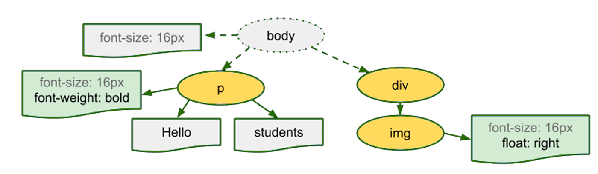

CSS Snapshot 2018
Selectors Level 3
CSS Style Atributtes
CSS Color Level 3
CSS Fonts Level 3
etc
Los estilos se propagan a los elementos que contiene.
Aplica propiedades de apariencia a los distintos elementos.
Los estilos se añaden en archivos aparte

Se procesa el lenguaje de marcado HTML y
construye el árbol de DOM.
Se procesa el lenguaje de marcado CSS y
construye el árbol de CSSOM.

Se combina el DOM y el CSSOM en un árbol de representación.

Se ejecuta el diseño en el árbol de representación
para calcular la geometría de cada nodo.
¿De qué tamaño y en qué ubicación se vería cada cosa?
Traduce las unidades relativas a estáticas
Se dibuja cada nodo en la pantalla.
¿Cómo se aplican los estilos?
<link rel="stylesheet" type="text/css" href="URL.css" media="mediaQuery" />
<style> selector/es { propiedad: valor; propiedad: valor; } </style>
<tag style="propiedad:valor; propiedad: valor"> contenido </tag>
@import url('URL') mediaQuery;
/* Comentario */
/* Selector */
h2
{
/* propiedad: valor */
font-family: roboto;
font-size: 1.7rem;
text-transform: uppercase;
color: white;
}